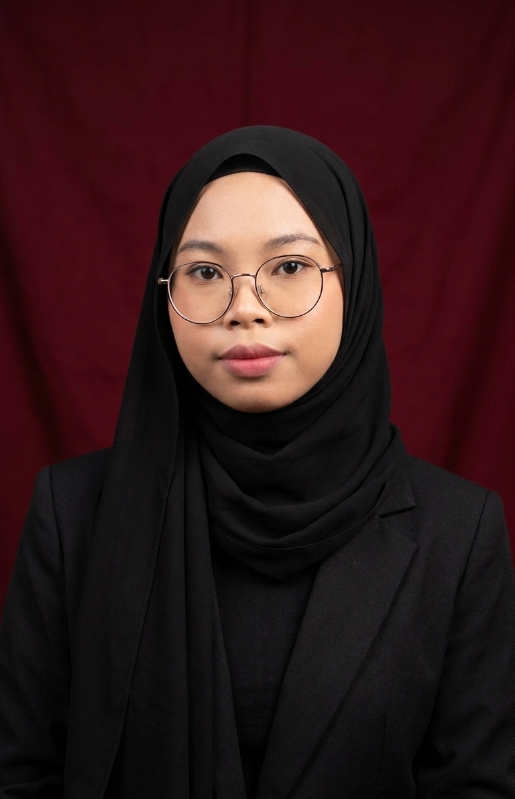

3rd Year Student | Future Software Developer | Technology Enthusiast
Learn More About MeHello and welcome! My name is Nur Atiqah Maisarah Bt Rohaimi. I am 23 years old and currently pursuing a Bachelor of Computer Science (Software Development) with Honours at Universiti Sultan Zainal Abidin (UniSZA), Besut Campus.
This website serves as my personal GitHub portfolio, where I share my learning experiences, projects, technical skills, and achievements throughout my university journey.
Name: Nur Atiqah Maisarah Bt Rohaimi
Age: 23 Years Old
Programme: Bachelor of Computer Science (Software Development) with Honours
University: Universiti Sultan Zainal Abidin (UniSZA), Besut Campus
Current Year: Third Year Student
I believe technology plays an important role in improving people's lives and businesses. Throughout my studies, I continuously seek opportunities to learn new programming languages, development frameworks, and problem-solving techniques.
My goal is not only to become a successful software developer but also to contribute innovative ideas that create value for society and organizations.
"Success is not final, failure is not fatal: it is the courage to continue that counts."